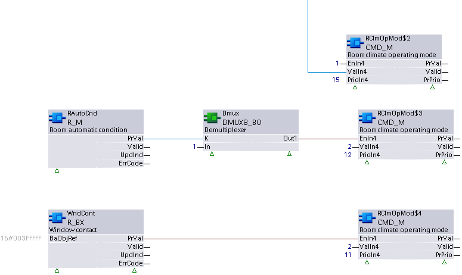

R_BX: Read multiple binary
R_BX reads and evaluates the present values of multiple (up to 16) binary data points according to a selectable evaluation function, and calculates a resulting value that can be used to update a Result BACnet object.
Compatible data points:
- Binary input [BI]
- Binary output [BO]
- Binary calculated value [BCalcVal]
- Binary configuration value [BCnfVal]
- Binary process value [BPrcVal]
- Third party objects which contain the required properties.
Refer to data point objects for a detailed description of the BACnet data points.
Required properties:
- Present value
- State flag
Optional properties:
- Reliability
- Update count
Hardware interrupt
This XFB supports hardware interrupts (OB trigger) for immediate response to specific events such as manual switching of lights. If the XFB is applied in a chart assigned to OB40 or OB41, OB triggering occurs automatically on interrupt signals from I/O modules.
Pin description (inputs)
BaObjRef | |
|---|---|
BA-Object reference Structure [BaObjRef] defines a bound connection between XFB and BACnet object. The binding occurs automatically. Manual configuration attempts are not necessary and can result in system errors. | |
DeviceId | Device identifier Double word (default value: 16#3FFFFF) [DeviceId] comprises object type and object instance in a single identifier. It is used to identify device object: local or remote. Local device object could also be identified by value 16#3FFFFF. |
ObjectId | Object identifier Double word (default value: 16#3FFFFF) [ObjectId] comprises object type and object instance in a single identifier. It is used to identify object within a device. |
ItemId | Item identifier Integer (default value: -1) [ItemId] represents an item index in the functional view node object, which references the BACnet object. [ObjectId] and [ItemId] together define an indirect access reference to the BACnet object. Value -1 indicates that direct binding is used. |
EvlFnct | |
|---|---|
Evaluation function Integer (default value: 2) [EvlFnct] determines the type of operation performed on all valid present values. | |
1: AND | The logical AND operation. |
2: OR | The logical OR operation. |
3: Last updated | The last updated value is selected. If more than one value is updated in the same cycle, the lowest index number is selected. |
Pin description (outputs)
PrVal |
|---|
Present value Boolean (default value: False) The value resulting from the evaluation function performed on all valid aggregated member objects. This value is used to update the result object present value. If the result object is manually overridden to a new value, [PrVal] will display the new value. [PrVal] will deliver the last valid value if [Valid] = False. Note |
Valid | |
|---|---|
Valid Boolean (default value: False) An indication of whether output pin [PrVal] is reliable. | |
1 (True) | [PrVal] is reliable if at least one of the aggregated member objects is valid. |
0 (False) | [PrVal] is not reliable if none of the aggregated member objects are valid. |
UpdInd |
|---|
Update indication Boolean (default value: False) An indication of whether the Present value property for one of the aggregated member objects has been newly updated. When an update occurs, [UpdInd] toggles from 0 to 1 (True) and returns to 0 (False) on the next cycle (immediate). It is not possible to detect the toggle without an additional function block connected to [UpdInd] (for example, a counter function block). [UpdInd] will only be set to True if [Valid] is True. [UpdInd] uses the update count property if present. This makes it possible to recognize a value as having been updated in cases where the new value is the same as the previous value. For objects without update count, [UpdInd] toggles on a change to Present value. Note |
NumVals |
|---|
Number of valid values Integer (default value: 0) The number of valid pesent values in the collection view node object. |
NumMbrs |
|---|
Number of aggregated members Integer (default value: 0) The total number of member objects in the collection view node object. |
ErrCode | |
|---|---|
Error code indication Integer (default value: 20) The status of the last performance of the XFB read operation. | |
= 0 | No error. |
> 0 | Error, see XFB error codes. |
ErrWrit | |
|---|---|
Error while writing Integer (default value: 20) The status of the last performance of the XFB write operation to the result object. | |
= 0 | No error. |
> 0 | Error, see XFB error codes. |
Use case examples
NOTICE

Note
Graphics reflect examples of XFB implementations; See ABT for current examples of CFC.
R_BX: Example taken from the HVAC user request CHT{RClmOpMod01}. Due to graphical size limitations, function blocks may be missing or shown more closely grouped than is typical.
